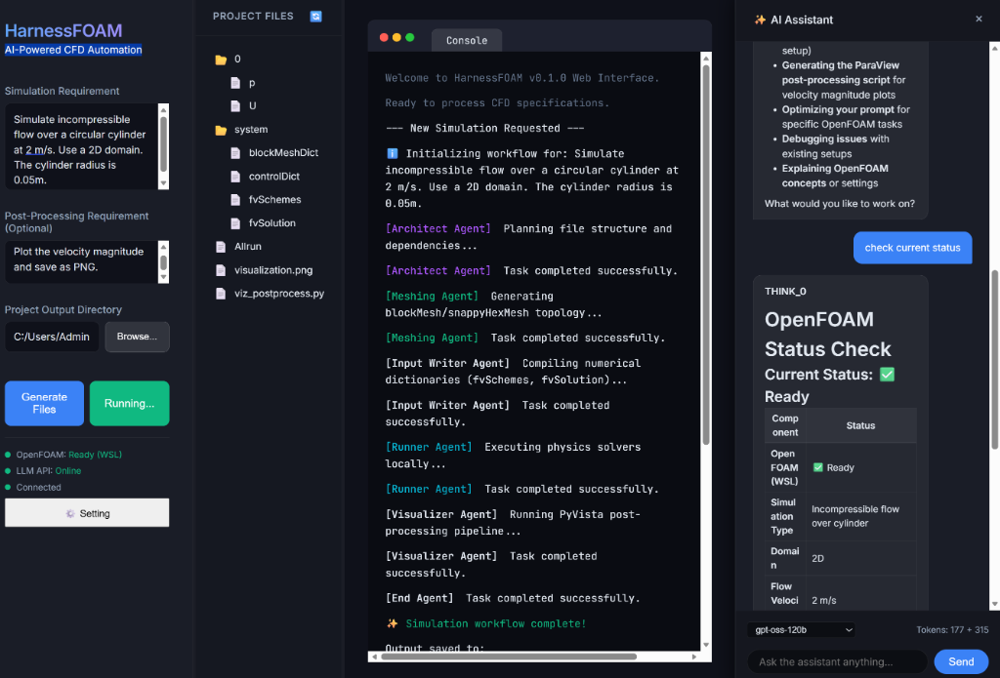

🖥️ Live Web User Interface

🔄 The Multi-Agent Workflow
Architect Agent
Interprets prompts and structures the OpenFOAM directory case plan.
Meshing Agent
Autonomously handles blockMesh Dict structures or compiles custom python-gmsh geometry scripts.
Input Writer
Writes mesh, control boundary, scheme, and physical property dictionaries using robust streaming.
Runner Agent
Executes simulations locally, via WSL/Docker, or drafts Slurm parallel schedules for HPCs.
Reviewer Agent
Performs visual (VLM) and semantic inspections of raw simulation logs, correcting divergence bugs.
Visualizer
Compiles PyVista post-processing scripts to extract pressure and velocity contours directly.
🚀 Getting Started
🧪 Verified Automation Pipeline
RAG Context
Architect and Input Writer receive canonical guidance plus 100 indexed dictionary files from the vendored official OpenFOAM 13 tutorials (cavity, pitzDaily, motorBike, damBreak, hotRoom and shockTube).
Preflight
Required files, FoamFile headers, solver dependencies, and mesh/field patch consistency are checked before execution.
checkMesh
Mesh topology and geometry are validated before the solver is launched.
Runtime Metrics
Residuals, continuity errors, Courant numbers, time steps, and completion markers are parsed automatically.
Post-Process
Deep Driving automatically calls the Visualizer Agent and returns a PyVista result image.
🌟 Visionary Future Roadmap
1. Distributed Compute Network
Leveraging De-Sci blockchain protocols to scale Large Eddy Simulations across peer-to-peer compute nodes.
2. Generative Physical Diffusion
Leveraging 4D Flow-Diffusion models to synthesize transient flow fields directly in milliseconds, bypassing grid discretisation.
3. Closed-Loop VLA Aero-Robotics
A Vision-Language-Action agent managing aerodynamic shapes from concept prompts down to physical wind-tunnel verification.
4. Quantum-Accelerated CFD
Developing hybrid solvers using VQE and HHL algorithms to resolve Naviers-Stokes matrices on QPUs.
5. Self-Evolution Physics Autopilot
Autonomously constructing local numerical discretisation schemes and turbulence closures via agent reinforcement loops.
6. HPC SSH Remote Dispatch
Fully integrating SSH connections to remote supercomputers for automated case dispatch, Slurm job submission, and live log feedback.